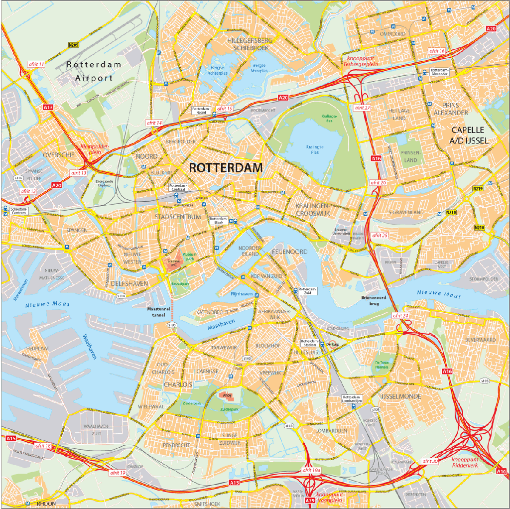

Helping the new tester
to get a running start
Joep Schuurkes
@j19sch
the common ways
- general information
- what users do
- documents
- test scripts
- defect tracker
learning to navigate a city
general information
what users do
documents
test scripts
defect tracker
You're good to go now!
Feeling comfortable?
some less common ways
- pair testing
- different documents
- explore and debrief
- history
- common patterns
- the people
- testing
pair testing
different documents
explore and debrief
history
common patterns
the people
testing
where does that bring us?
- general information
- what users do
- documents
- test scripts
- defect tracker
- pair testing
- different documents
- explore and debrief
- history
- common patterns
- the people
- testing
So what am I driving at?
provide structure
model the application
and
your approach to testing
guide interactions
with the application
and
with the team
empower
the new tester
have fun
So what am I driving at again?
provide structure
model
your application
your approach to testing
no overhead
guide interactions
with the application
with the team
empower the
new tester
team
have fun
thank you!
@j19sch
testingcurve.wordpress.com
your approach to testing
no overhead
guide interactions
with the application
with the team
empower the
new tester
team
have fun
thank you!
@j19sch
testingcurve.wordpress.com
with the team